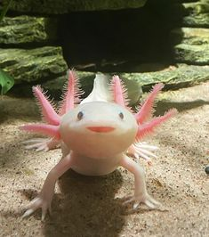

COMO TE AYUDA EL ACUARISMO EN TU SALUD
1
ayudan y calman a los niños que sufren hiperactividad, transtornos de comportamiento, como dificultad para socializarse, agresividad excesiva, rendimiento escolar escaso o poca confianza en el mismo
2
los ancianos tienen que adoptar responsabilidades y un acuario cambia en las rutinas en las recidencias de ancianos o en sus hogares
3
Esta demostrado que observar atentamente a un acuario, los movimientos ritmicos y acompasados de los peces el vaiven de las plantas con el agua en movimiento, el suave sonido de las onadas de agua o las burbujas de aire relaja y tranquiliza a las personas.

CATEGORIA


